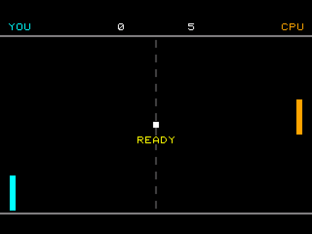
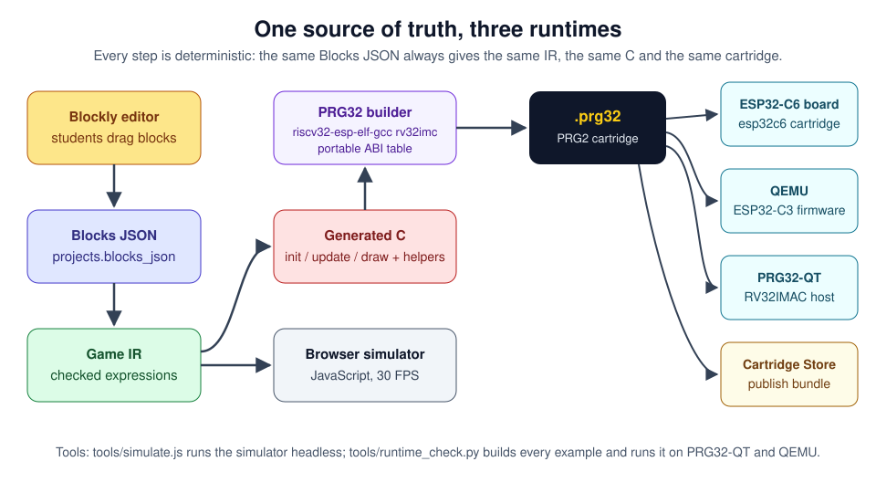
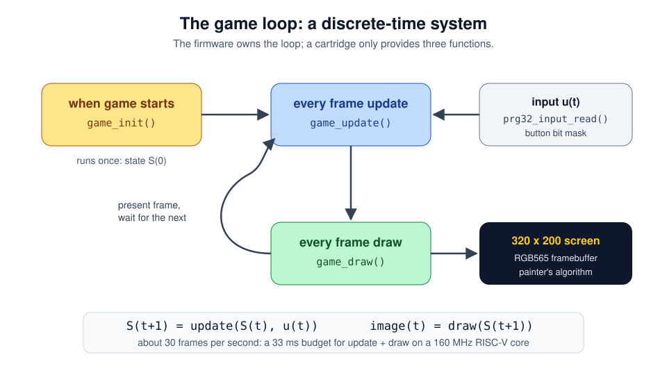
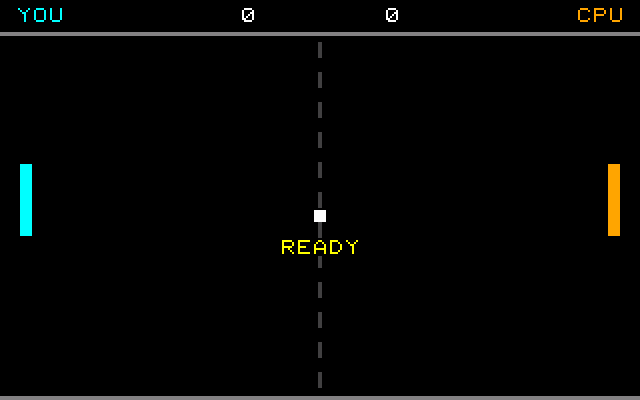
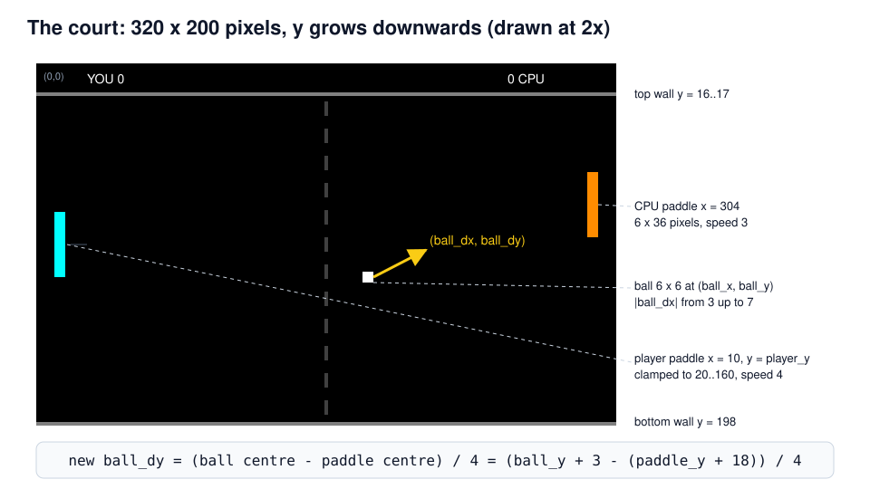
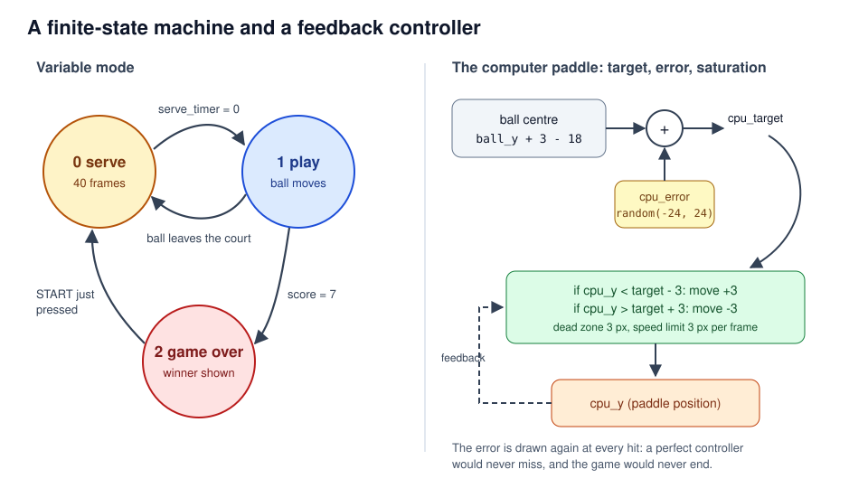
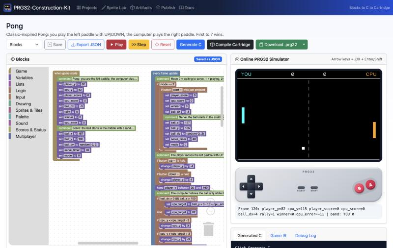
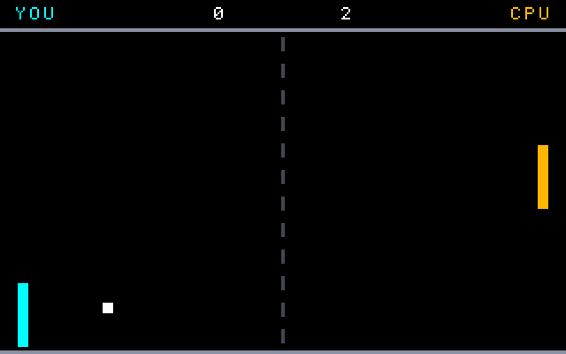

Pong
A first real-time game: state, motion, collision and a feedback controller
PRG32-Construction-Kit tutorial deck, step by step, from blocks to a RISC-V cartridge.

Learning outcomes
By the end of this tutorial you can:
- describe a video game as a discrete-time system: a state that an update rule advances once per frame;
- use variables, conditions and comparisons to model motion and bounces;
- detect collisions between axis-aligned rectangles (AABB);
- build a computer opponent as a feedback controller with saturation and noise;
- follow the same program from blocks to IR to C to a PRG32 cartridge, and run it on QEMU and PRG32-QT.
Prerequisites: the first-project tutorial (docs/tutorials/01_first_project.md). About 90 minutes.
Why Pong?
- Tennis for Two (1958) ran on an analogue computer and an oscilloscope; Atari's Pong (1972, engineered by Allan Alcorn) turned the idea into the first commercially successful arcade video game.
- The original had no CPU: its "program" was a circuit of logic chips. Our version is a few hundred lines of C running on a 32-bit RISC-V core.
- Pong is the smallest game that still contains the core ideas of interactive simulation: state, time step, input, collision, scoring, an opponent.
Every element of the court is a rectangle and every rule is an
if. That makes Pong the "hello world" of game physics.
This is an original, classic-inspired reimplementation made for teaching; it is not affiliated with the historical products.
From blocks to cartridge

The game loop

Rules and controls
| Button | Action |
|---|---|
| UP / DOWN | move your paddle (left) |
| START | play again after a game over |
- The computer plays the right paddle.
- The ball bounces on the top and bottom walls.
- A point is scored when the ball leaves the court; the first to 7 wins.
- The ball gets faster at every paddle hit (up to 7 pixels per frame).

The court in numbers

Step 1 - The state
Everything the game remembers lives in variables: whole numbers set in when game starts.
player_y,cpu_y: the paddle tops.ball_x,ball_y: the ball position;ball_dx,ball_dy: its velocity in pixels per frame.mode: which phase of the game we are in.- The serve comment group is reused after every point.
In C, each variable becomes a static int and pong_init gives it its first value.
Step 2 - Modes: a finite-state machine

Step 2 - Modes in blocks
if button START was just pressed fires once per press (edge detection): the kit remembers the buttons of the previous frame.
Step 3 - The player's paddle
- is held is true on every frame the button is down: 4 pixels per frame is 120 pixels per second.
- keep ... between is a clamp: the paddle cannot leave the court.
/* The player moves the left paddle with UP and DOWN. */
if (input & PRG32_BTN_UP) {
player_y += -4;
}
if (input & PRG32_BTN_DOWN) {
player_y += 4;
}
if (player_y < 20) { player_y = 20; }
if (player_y > 160) { player_y = 160; }Step 4 - Moving the ball
Euler integration with a time step of one frame:
x(t+1) = x(t) + dx
A bounce is a reflection: the vertical velocity changes sign. Using abs(ball_dy) instead of -ball_dy is more robust: the ball can never get stuck inside a wall flipping back and forth.
Step 5 - Paddle collisions
Step 5 - Collision and angle, explained
- if rect ... touches rect calls the PRG32 sprite API
prg32_sprite_hitbox: two rectangles overlap when they overlap on both axes. - Only the paddle the ball is moving towards is tested, so the ball cannot be hit twice.
min(abs(ball_dx) + 1, 7)speeds the ball up but keeps it slower than 7 px: a faster ball could jump over the 6-pixel paddle (tunnelling).
/* Where the ball hits the paddle decides the new angle. */
ball_dy = (ball_y + 3 - (player_y + 18)) / 4;
rally = rally + 1;The farther from the paddle centre the ball lands, the steeper it leaves: the player can aim.
Step 6 - The computer player
A proportional controller with saturation: move towards the target at most 3 px per frame, with a dead zone of 3 px so the paddle does not jitter.
The target includes cpu_error, a random offset drawn at every hit. The difficulty is a single number: try random(-10, 10) (hard) or random(-40, 40) (easy).
Step 7 - Points and the end of the game
The status band is the strip the PRG32 firmware draws under the 320 x 200 game area.
Step 8 - Drawing the frame
Painter's algorithm: draw from back to front; later blocks cover earlier ones.
The dashed net is one repeat block: dash n is drawn at y = 21 + n * 15.
/* The net: a dashed line made of 12 short rectangles. */
{
/* repeat dash from 0 to 11 (at most 1024 times) */
int prg32_kit_step0;
int prg32_kit_last0 = 11;
int prg32_kit_count0 = 0;
for (prg32_kit_step0 = 0; prg32_kit_step0 <= prg32_kit_last0 && prg32_kit_count0 < 1024; ++prg32_kit_step0, ++prg32_kit_count0) {
dash = prg32_kit_step0;
prg32_gfx_rect(159, 21 + dash * 15, 2, 8, PRG32_COLOR_DARK_GRAY);
}
}Blocks and C side by side
/* Paddle hits: only the paddle the ball is moving towards can hit it. */
if (ball_dx < 0) {
if (prg32_sprite_hitbox(ball_x, ball_y, 6, 6, 10, player_y, 6, 36)) {
ball_dx = prg32_kit_min(prg32_kit_abs(ball_dx) + 1, 7);
/* Where the ball hits the paddle decides the new angle. */
ball_dy = (ball_y + 3 - (player_y + 18)) / 4;
rally = rally + 1;
/* The computer guesses where to stand; a bigger guess error makes it miss. */
cpu_error = prg32_kit_random(-24, 24);
prg32_audio_note(0, 0, prg32_kit_note_from_hz(660), 255, 40);
}
}
if (ball_dx > 0) {
if (prg32_sprite_hitbox(ball_x, ball_y, 6, 6, 304, cpu_y, 6, 36)) {
ball_dx = -prg32_kit_min(prg32_kit_abs(ball_dx) + 1, 7);
/* Where the ball hits the paddle decides the new angle. */
ball_dy = (ball_y + 3 - (cpu_y + 18)) / 4;
rally = rally + 1;
/* The computer guesses where to stand; a bigger guess error makes it miss. */
cpu_error = prg32_kit_random(-24, 24);
prg32_audio_note(0, 0, prg32_kit_note_from_hz(660), 255, 40);
}
}Play it in the browser

- Dashboard, Examples, Pong (complete game), Add.
- Play; use the arrow keys or the on-screen pad.
- Change a number (paddle speed,
cpu_error), press Play again. - Generate C shows the C above; Game IR shows the checked program.
The simulator draws with the same 8 x 8 font and the same RGB565 colours as the firmware.
Build and run the cartridge
Download .prg32 builds pong-esp32c6.prg32; the arrow next to it builds pong-qemu.prg32.
python3 -m prg32 qemu upload pong-qemu.prg32
python3 -m prg32 qemu run
PRG32-QT: Import Cartridge and choose either file, or headless:
prg32qt-headless pong-qemu.prg32 300 --dump-ppm pong.ppm

What the toolchain produced
| Measure | Value |
|---|---|
| Blocks | 3 stacks, 138 blocks |
| Generated C | 349 lines, deterministic |
| RISC-V code (rv32imc) | 4644 bytes, same for esp32c6 and qemu |
| Required PRG32 features | audio, sprites (auto-detected) |
| Verified on | browser simulator, QEMU firmware, PRG32-QT (tools/runtime_check.py) |
The cartridge calls the firmware through the portable ABI table, so the same machine code runs on the board and in both emulators.
Exercises
- Two players: replace the computer with the player 2 up / down buttons (PRG32 controller bits 8-14).
- Difficulty levels: choose
cpu_error's range from a variable set by A (easy) or B (hard) on the title screen. - Speed physics: what happens if the maximum speed is 9? Explain the result with the paddle width (tunnelling).
- Sound design: play a different MIDI note for wall bounces, paddle hits and points.
- Measure: count frames in a long rally with
frame(); how many seconds is that at 30 FPS?
Check your understanding: why does the bounce use abs(ball_dy) rather than -ball_dy?
References
- PRG32 project and portable cartridge ABI: https://github.com/riscv-prg32/PRG32
- PRG32-QT runtime and debugger: https://github.com/riscv-prg32/PRG32-QT
- Construction Kit block reference:
docs/blockly.md; feature coverage:docs/prg32_feature_coverage.md - R. Nystrom, Game Programming Patterns, "Game Loop" and "Update Method" chapters (2014).
- K. Salen, E. Zimmerman, Rules of Play: Game Design Fundamentals, MIT Press (2003).